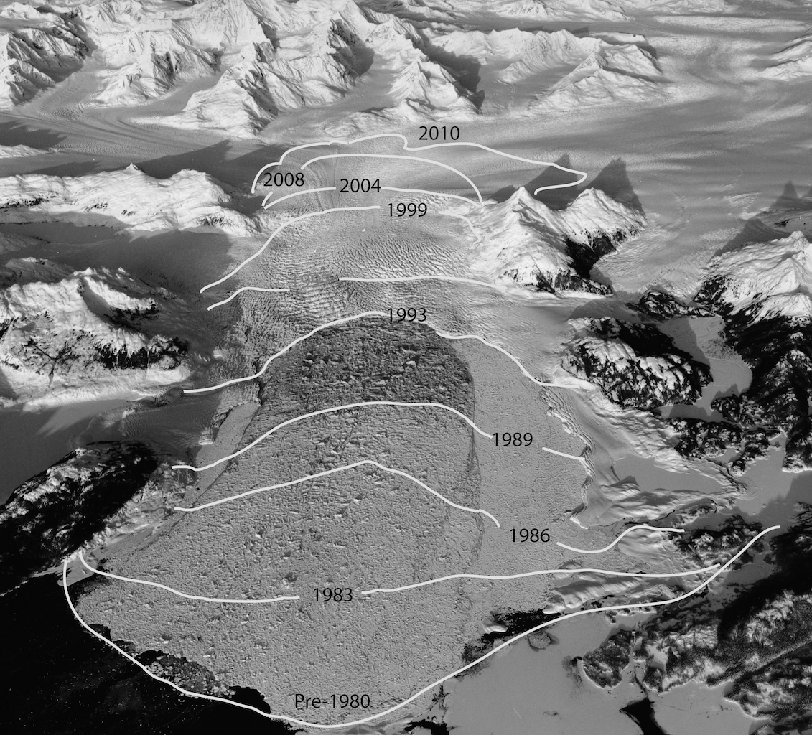
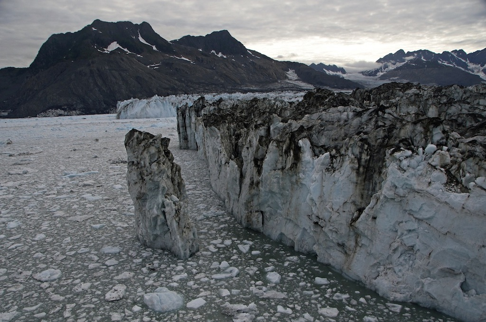
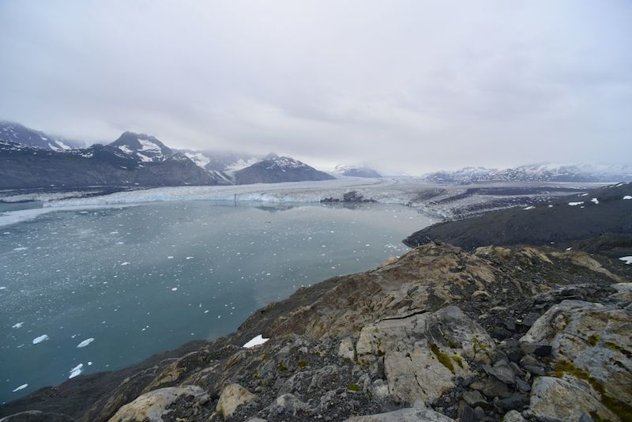
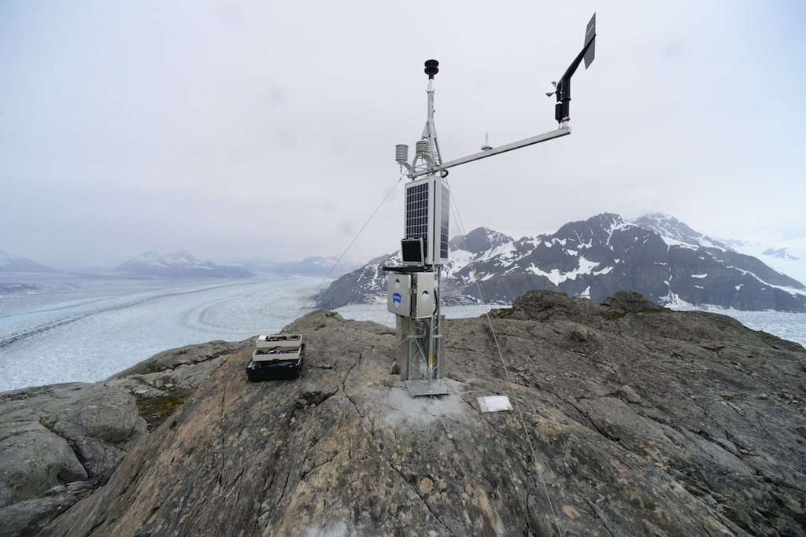
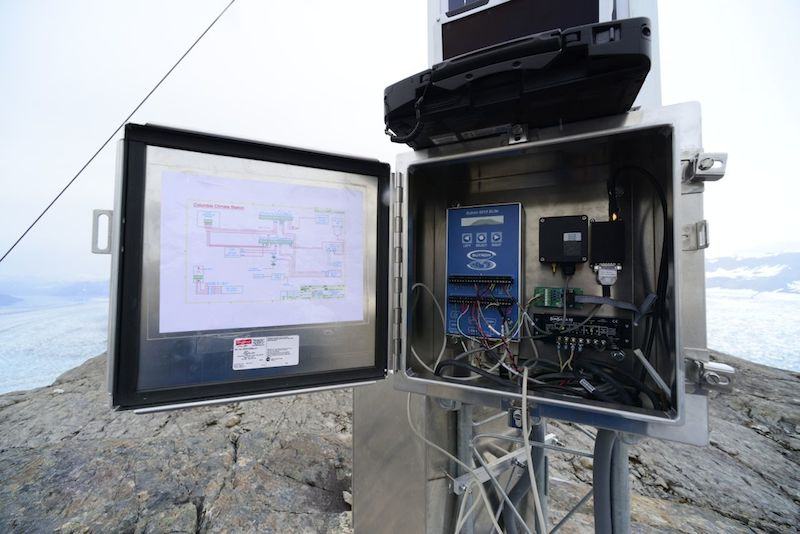
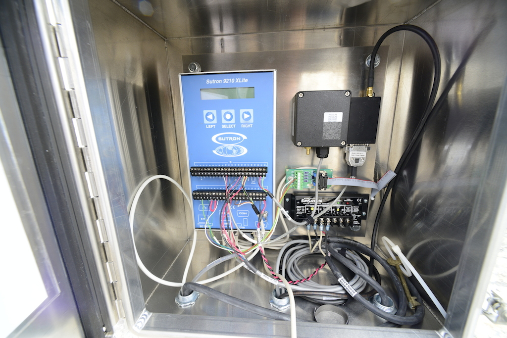

- Locations
- Columbia Glacier
- Images of the Columbia Glacier
Images of the Columbia Glacier

Aerial photograph of Columbia Glacier (1993) tracking its retreat beginning in the 1980's.

A precarious chunk of ice hangs on via a submarine tongue at the Columbia Glacier terminus. Credit: Adam LeWinter, CRREL

Columbia Glacier, as seen from Great Nunatak. Credit: Adam LeWinter, CRREL

Columbia Glacier climate station. Credit: Adam LeWinter, CRREL

Columbia Glacier climate station controller enclosure. Credit: Adam LeWinter, CRREL

Columbia Glacier climate station controller enclosure. Credit: Adam LeWinter, CRREL